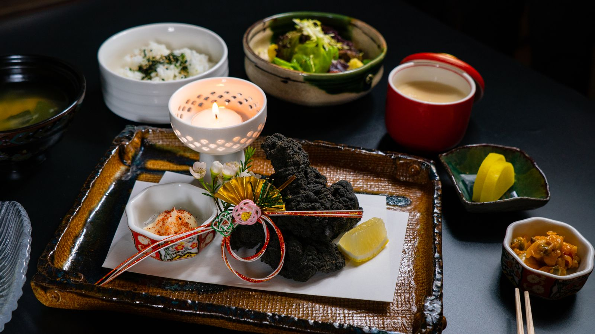
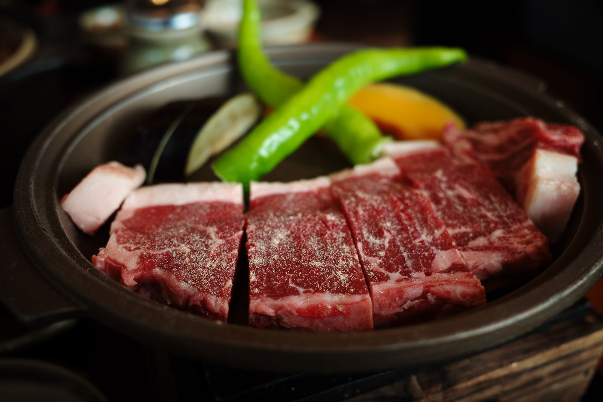
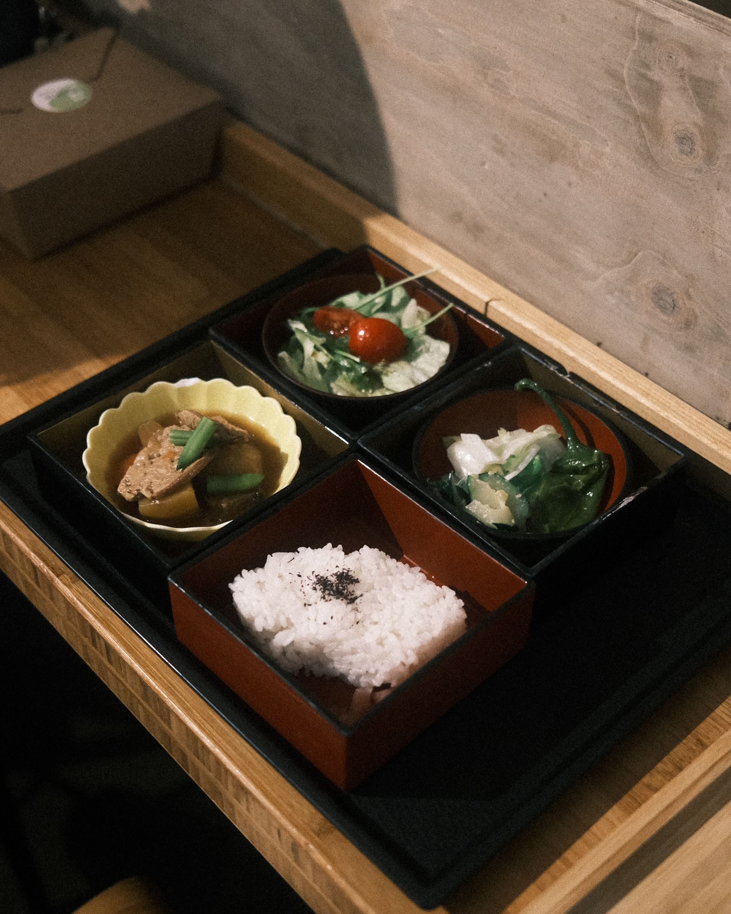

Cuisineお料理
山の恵みを、
季節の器にのせて。
飛騨の山々が育てた野菜やきのこ、清流の川魚、そして飛騨牛。
料理長が季節ごとに献立を組み立て、ひと皿ずつ丁寧にお作りしています。
Dinner
ご夕食

秋の飛騨会席「紅葉」
お部屋ごとに仕切られた個室のお食事処で、できたてをお一品ずつお出しします。
- 先付菊花と春菊のおひたし
- 前菜秋の彩り八寸
- お造り岩魚と信州サーモン
- 焼物飛騨牛の朴葉味噌焼き
- 煮物きのこと飛騨ねぎの炊き合わせ
- 食事飛騨こしひかり・赤だし・香の物
- 水菓子季節の果物と栗の葛餅
※ 仕入れの状況により内容が変わる場合がございます。
Breakfast
ご朝食

体にやさしい、飛騨の朝ごはん
朴葉味噌、地元のお豆腐、焼き魚、炊きたての飛騨こしひかり。旅の一日を元気に始められる和朝食をご用意しています。
- 時間
- 7:00〜9:00（最終入場 8:30）
- 会場
- 1階 お食事処「樹庵」
Information
お食事のご案内
個室のお食事処
ご夕食はすべて個室でご用意します。小さなお子さま連れでも安心です。
アレルギー対応
ご予約の3日前までにお知らせください。可能な範囲で対応いたします。
お子さまメニュー
お子さまの年齢に合わせた、お子さま会席・お子さまランチがございます。